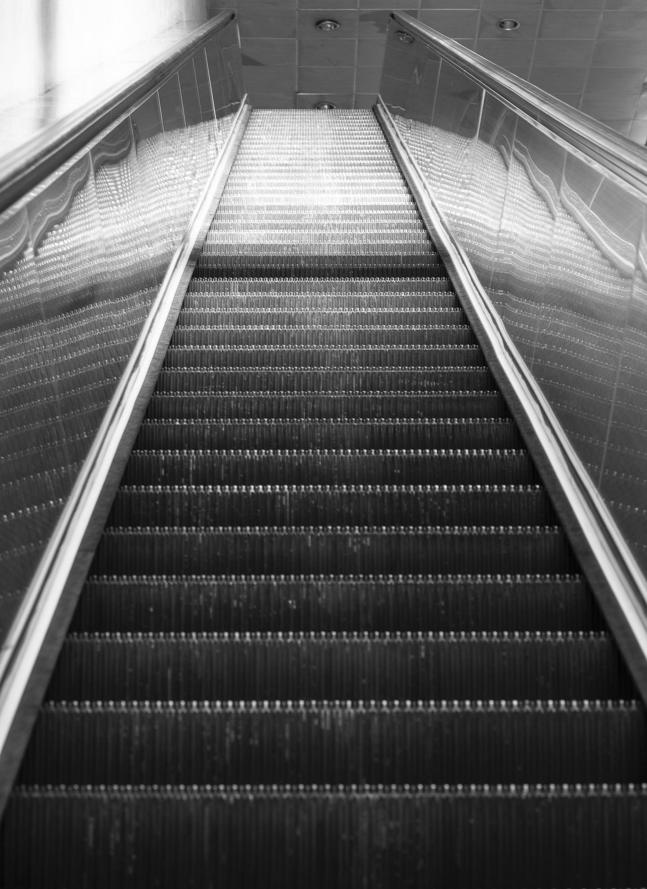
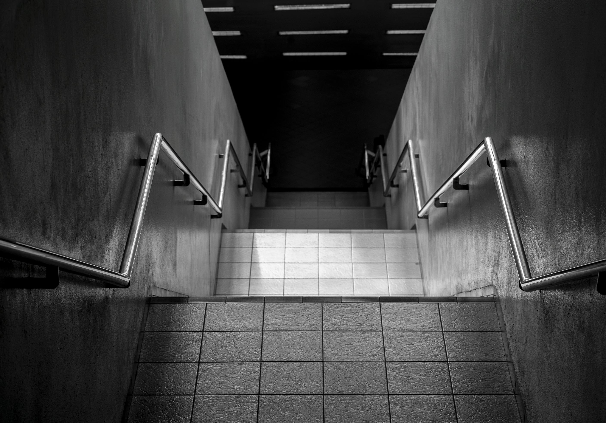
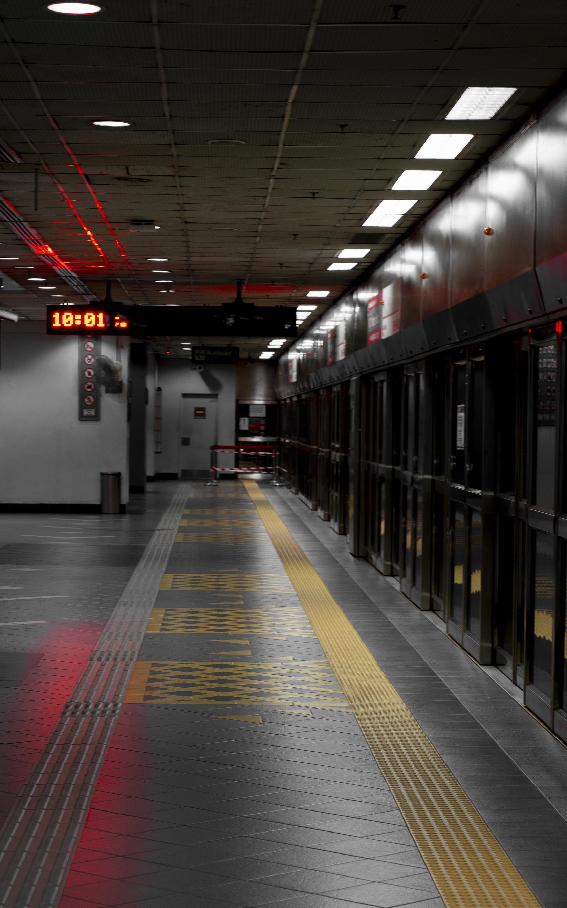
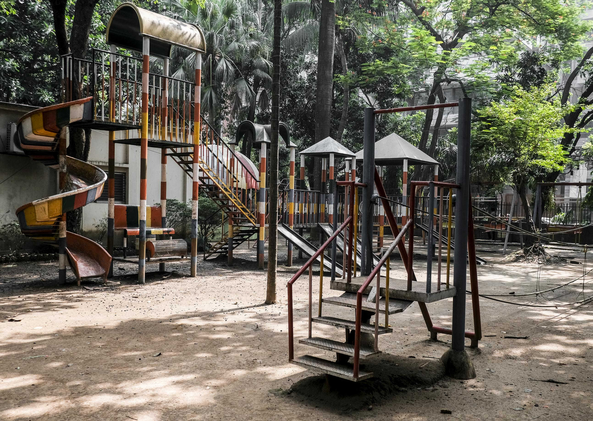

Liminal space refers to the transitions of our life. It defines the space and time which signals change and change often scares us. We often occupy the liminal space for fleeting moments of time, and before we know it, it is time for us to leave. Liminal spaces are a haunting reminder of how we live absorbed in the moment and suddenly discover that change is upon us.



